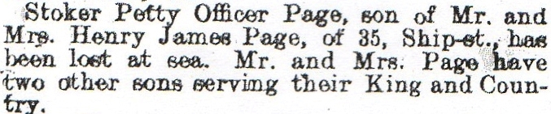
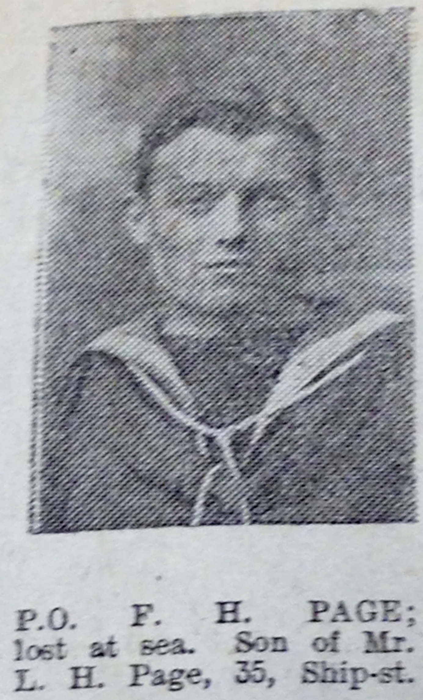
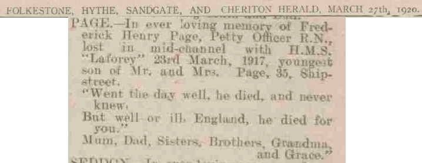
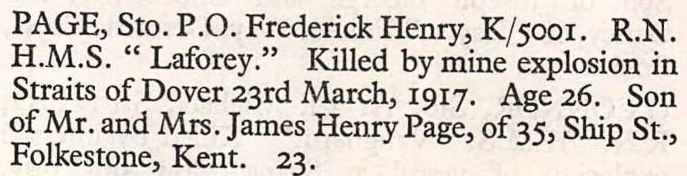

Frederick Henry Page 1891 - 1917
[ Home ] | [ Calendar ] | [ Surnames Index ] | [ Family History ]A royal navy stoker and the son of James Page and Elizabeth SellisFrederick Page, the third cousin once-removed on the father's side of Nigel Horne, was born in Folkestone, Kent, England on Mar 26, 18911,2,3 and baptized there at St John The Baptist on Jun 14, 1891. He was married to Unknown. On Apr 2, 1911, he lived at Sailors Home, Dover, Kent, England7. During 1917, he was serving in the navy (regiment: Royal Navy; Rank: Petty Officer Stoker; Service number: K/5001; HMS Laforey).
He died on Mar 23, 19172,3,4,5,6 (mine explosion Body not recovered for burial).
Parents
- James Henry was born on Oct 14, 1861
- Elizabeth Ann
Citations
- Kent, Canterbury Archdeaconry baptisms 1538-1912 - Findmypast
- Lives Of The First World War 1914-1918 - Findmypast
- Ww1 Naval Casualties - Findmypast
- British Newspaper Death & In Memoriam Notices - Findmypast
- Commonwealth War Graves Commission Debt Of Honour - Findmypast
- Deaths At Sea, 1781-1968 - Findmypast
- 1911 Census for England & Wales - Findmypast (was age 20 and a visitor in the household)
Media
Folkestone Herald - 31 Mar 1917

Frederick Henry Page

Folkestone Herald - 27 Mar 1920

Frederick Henry Page
Chatham Naval Memorial - 1917

Kent, Canterbury Archdeaconry baptisms 1538-1912 - GBPRS/CANT/B/96669335
England & Wales births 1837-2006 - BMD/B/1891/2/AZ/000457/069
Deaths at sea, 1781-1968 - BMD/D/MARITIME/926605
Commonwealth War Graves Commission Debt Of Honour - GBM/CWGC/ROLLOFHONOUR/000731484
1911 Census For England & Wales - GBC-1911-RG14-04591-0115-10
England Births & Baptisms 1538-1975 - R_884234422
Lives of the First World War 1914-1918 - GBM/LIVES/6381155
British Newspaper Death & In Memoriam Notices - FN-D-D1DA7CD0-DF0F-4E3F-A812-2989C328DF27
Family Tree

Generated by ged2site. Last updated on Nov 13, 2024